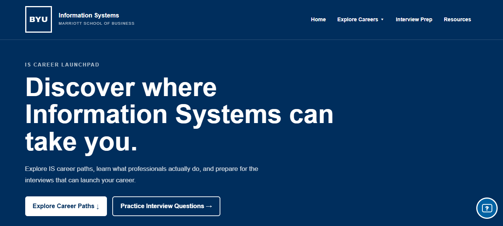

Showing all projects
WEBSITE / SCHOOL PROJECT
Coursewise
A student task manager that brings assignments and deadlines together, with a streamlined Canvas import to help students get organized quickly. Created as a team for the Project Management and Systems Design course at BYU.

GAME / PERSONAL PROJECT
Scriptle
Randomly pulls scriptures from a user-specified pool of the standard works of the Church of Jesus Christ of Latter-day Saints then the player can guess which book of scripture it comes from.

WEBSITE / SCHOOL PROJECT
IS Career Launchpad
Worked on a new team to create a working website designed to offer guidance on which information systems-related career path to pursue.
No matching projects. Try a different search or category.